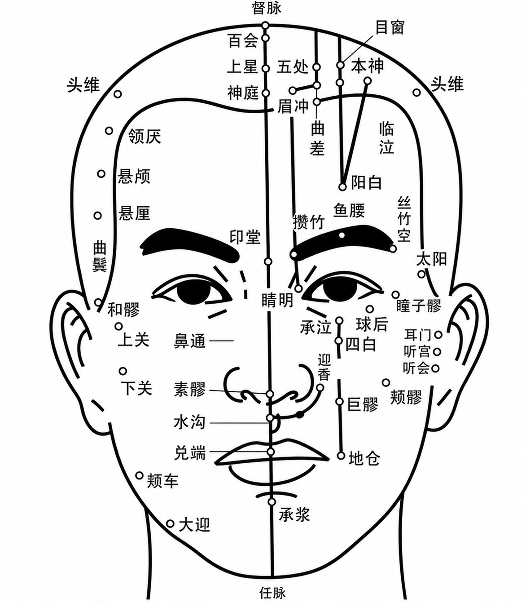

A gentle facial wellness ritual designed to soften muscular tension, release jaw tightness, calm sensory overload, and restore a naturally relaxed facial expression.
Through slow therapeutic touch, acupoint awareness, facial massage, and nervous system regulation, the ritual encourages emotional grounding, quiet presence, and deep restorative calm.
Inspired by Eastern wellness philosophy and quiet luxury rituals, this experience supports the connection between facial expression, emotional state, breathing rhythm, and the overall balance of the nervous system.
